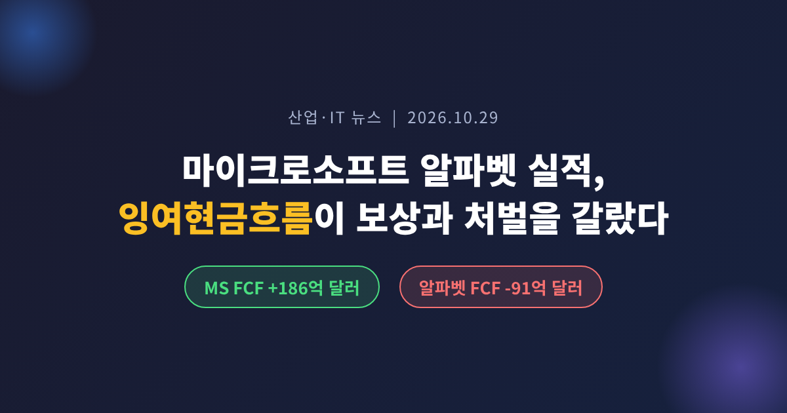
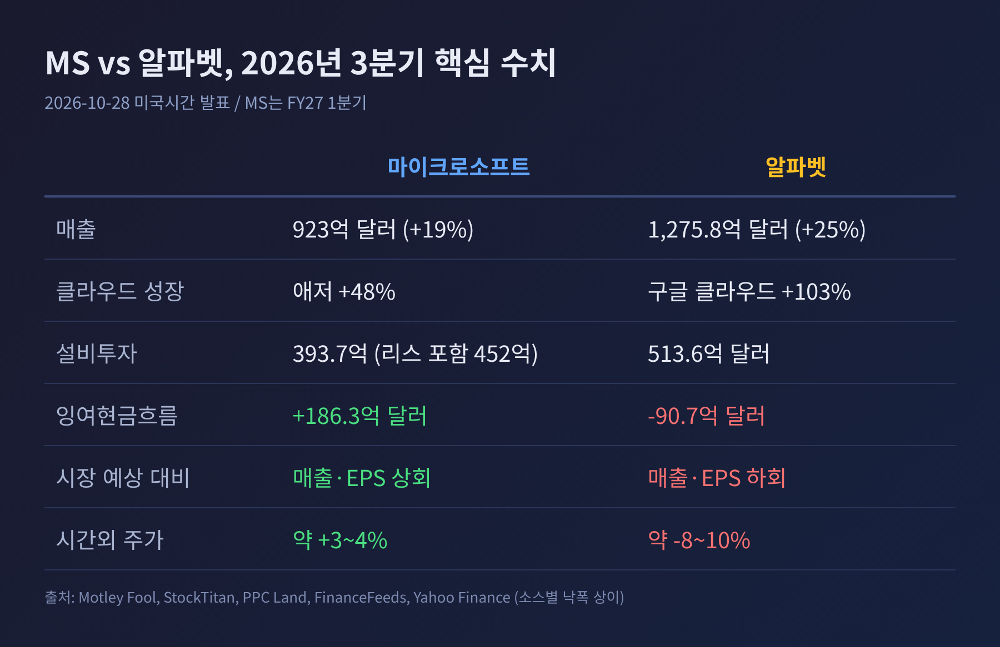
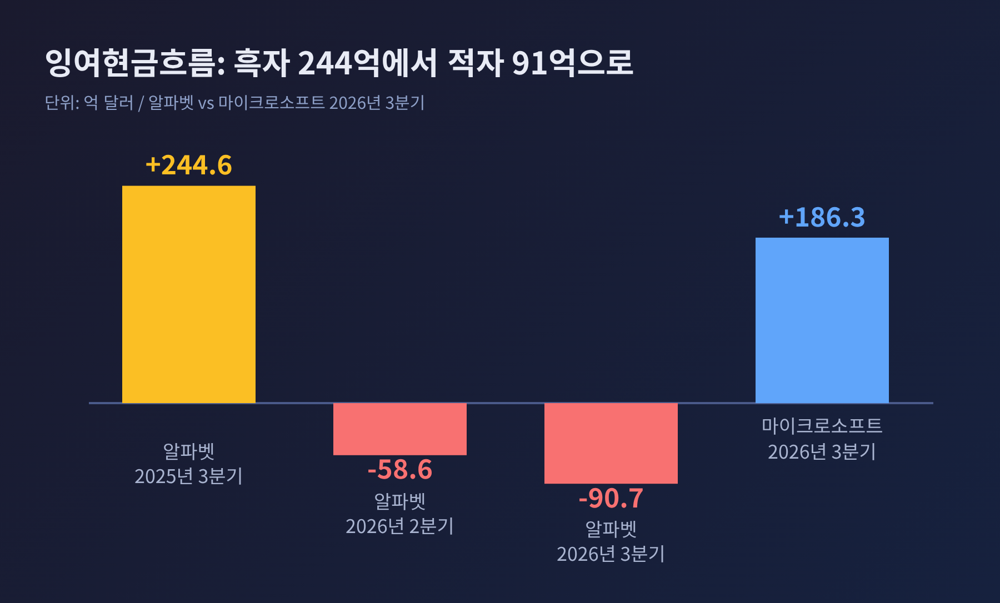
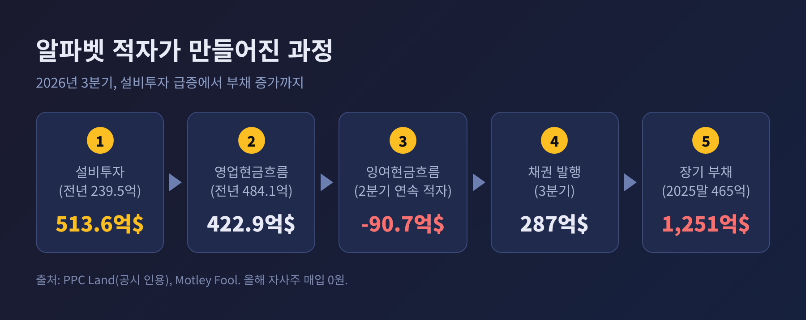
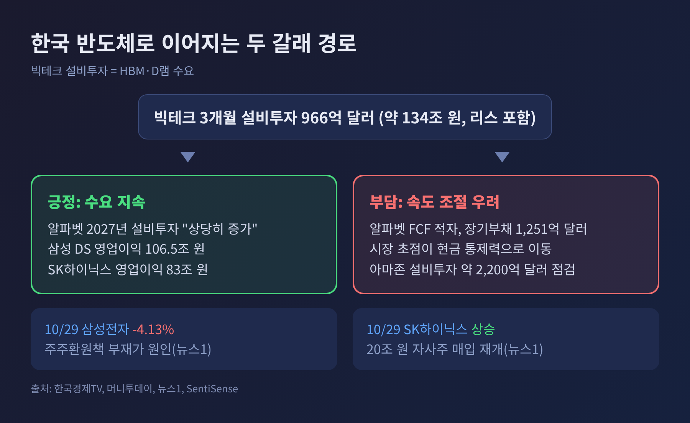
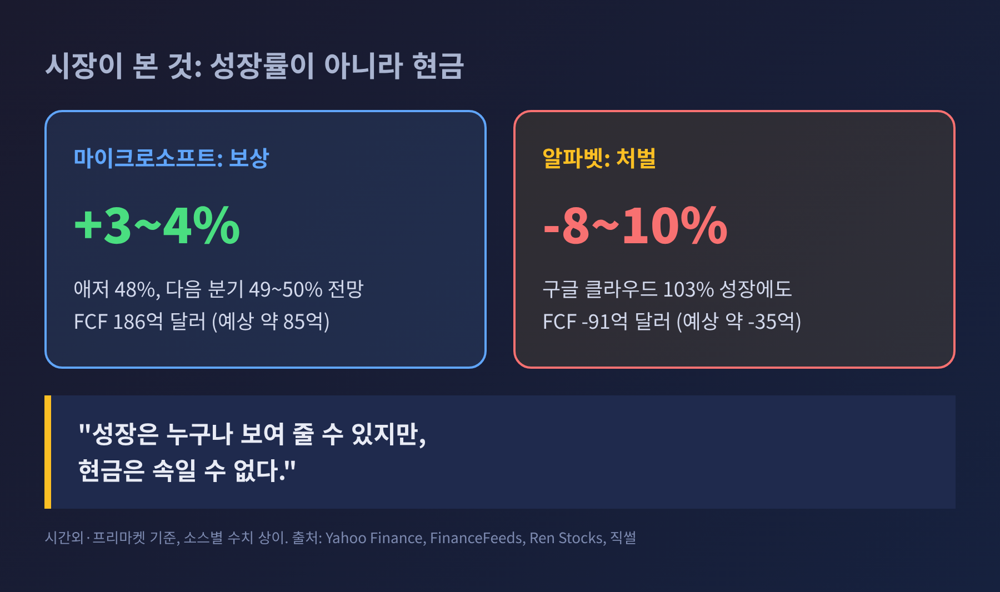

3줄 요약 - 마이크로소프트는 애저 48% 성장과 잉여현금흐름 186억 달러로 주가가 올랐고, 알파벳은 잉여현금흐름 마이너스 91억 달러로 시간외 약 8~10% 하락했습니다. - 두 회사 모두 클라우드는 크게 성장했습니다. 갈린 지점은 설비투자를 감당하는 현금의 힘이었습니다. - 한국 반도체는 빅테크 투자 수요의 수혜 쪽에 서 있지만, 투자 속도 조절 우려라는 변수도 함께 생겼습니다.
이번 글에서는 2026년 10월 28일(미국시간) 발표된 마이크로소프트와 알파벳의 3분기 실적을 정리해 보겠습니다. 같은 AI 투자를 하고도 시장 평가가 정반대로 갈린 이유를 숫자로 살펴봅니다. 29일 아마존 실적과 한국 반도체에 미칠 영향도 짚습니다.
두 회사는 28일 미국 증시 마감 후 실적을 내놓았습니다. 마이크로소프트는 2027 회계연도 1분기, 알파벳은 2026년 3분기 결과입니다.
마이크로소프트의 분기 매출은 923억 달러로 전년보다 19% 늘었습니다. 조정 주당순이익은 4.89달러로 시장 예상치 4.72달러를 웃돌았습니다. 애저(Azure) 매출은 331억 7천만 달러로 48% 성장했고, 다음 분기 전망은 49~50%로 제시했습니다. 애널리스트 모델은 45% 안팎이었습니다(Motley Fool, Ren Stocks 등).
알파벳의 매출은 1,275억 8천만 달러로 25% 증가했지만 시장 예상치에는 소폭 못 미쳤습니다. 주당순이익은 2.12달러로 전년 2.87달러보다 줄었습니다. 지분증권 평가손실 약 87억 달러가 주당 0.55달러를 깎았는데, 이를 빼도 예상에는 미치지 못했다는 평가입니다(Motley Fool).
주가는 이렇게 움직였습니다. 마이크로소프트는 시간외와 프리마켓에서 약 3~4% 올랐습니다. 알파벳은 시간외에서 292.50달러까지 밀리며 약 10% 가까이 빠졌습니다(FinanceFeeds). 소스마다 낙폭이 8~10%로 조금씩 다르다는 점은 밝혀 둡니다.

놀라운 대목은 클라우드 성적이 알파벳 쪽이 더 좋았다는 점입니다. 구글 클라우드 매출은 307억 1천만 달러로 전년 대비 103% 늘었습니다. 클라우드 영업이익률도 36.2%로 1년 전 23.7%에서 크게 올랐습니다(StockTitan). 성장률만 보면 애저 48%를 훌쩍 앞섭니다.
그런데도 시장은 알파벳을 벌했습니다. 이유는 잉여현금흐름에 있습니다. 잉여현금흐름은 영업으로 번 현금에서 설비투자를 뺀 금액입니다. 회사가 투자 후에도 자유롭게 쓸 수 있는 돈을 가리킵니다.
마이크로소프트는 186억 3천만 달러를 남겼습니다. 전년보다 27% 줄었지만 시장 예상 약 85억 달러의 두 배를 넘었습니다(Mitrade, 직썰). 알파벳은 마이너스 90억 7천만 달러였습니다. 직전 분기 마이너스 58억 6천만 달러에 이어 두 분기 연속 적자이고, 전년 같은 분기에는 244억 6천만 달러 흑자였습니다(PPC Land). 시장 예상은 마이너스 35억 달러 안팎이었습니다(Yahoo Finance).
예전엔 클라우드 성장률이 곧 주가의 방향이었습니다. 지금은 그 성장을 누가 자기 돈으로 감당하느냐가 먼저 묻는 질문입니다.

알파벳의 3분기 설비투자는 513억 6천만 달러입니다. 1년 전 239억 5천만 달러의 2.1배로, 역대 최대입니다. 영업현금흐름은 423억 달러로 오히려 13% 줄었습니다. 번 돈은 줄고 쓴 돈은 두 배가 됐으니 적자가 불가피했습니다.
부족분은 빚으로 메웠습니다. 3분기에만 선순위 무담보 채권 287억 달러를 찍었고, 장기 부채는 2025년 말 465억 달러에서 1,251억 달러로 불었습니다. 올해 자사주 매입은 한 푼도 하지 않았습니다(PPC Land). 2026년 설비투자 가이던스는 1,950억~2,050억 달러이고, 2027년에는 "상당히 늘리겠다"고 했습니다. 가이던스대로라면 4분기에만 630억~730억 달러가 필요하다는 계산이 나옵니다.
마이크로소프트의 현금 설비투자도 393억 7천만 달러로 1년 전의 두 배입니다. 금융리스를 포함하면 452억 달러인데, 회사가 제시한 500억 달러 초과 가이드에는 못 미쳤습니다(Ren Stocks). 두 회사의 3개월 설비투자를 합치면 금융리스 포함 966억 달러, 약 134조 원입니다(한국경제TV).
알파벳에는 설비투자 말고도 부담이 있었습니다. 검색·기타 매출이 633억 5천만 달러로 12% 성장에 그쳤습니다. 1분기 19%, 2분기 17%에서 계속 둔화되는 흐름이고, 시장 예상 649억 달러에도 못 미쳤습니다(Yahoo Finance). 클로드나 챗GPT 같은 AI 서비스가 검색을 잠식한다는 우려가 되살아난 이유입니다. KeyBanc의 저스틴 패터슨은 "향후 1~2분기 에어포켓" 가능성을 언급했습니다.
반대 시각도 있습니다. 알파벳 CEO 순다르 피차이는 "AI 인프라와 AI 솔루션에 대한 엄청난 수요"를 이야기했고, 연 환산 매출이 5천억 달러 선에 올랐다고 강조했습니다. 수요가 확실하다면 지금의 현금 소모는 선투자라는 논리입니다. 다만 그 수요가 얼마나 이어질지는 아직 완벽하게 증명된 것이 아닙니다.
마이크로소프트라고 안전지대는 아닙니다. 상업 잔여이행의무(RPO)는 6,770억 달러로 73% 늘었지만 시장 예상 약 7,060억 달러에는 못 미쳤다는 보도가 있습니다(Ren Stocks). CFO 에이미 후드는 2027 회계연도에 잉여현금흐름 플러스를 유지하겠다고 밝혔습니다. 약속이 지켜지는지가 다음 시험대입니다.

시장 환경도 한몫했습니다. 연준은 28일 기준금리를 연 3.75~4.00%로 동결했고, 발표 직후 미 10년물 국채금리는 5.04% 수준까지 올랐습니다(한국경제TV, Mitrade). 금리가 높을수록 빚으로 조달하는 투자의 비용은 커집니다. 알파벳의 채권 의존이 더 무겁게 읽힌 배경입니다.
한국경제TV는 시장의 초점이 현금 통제력과 수익성으로 옮겨가고 있다고 짚었습니다. 한 가지 덧붙이자면, 이 보도는 마이크로소프트가 유상증자나 회사채 발행도 선택지라고 밝혔다고 전하는데 다른 소스에서는 확인되지 않아 참고만 하시길 권합니다.
이제 눈은 아마존으로 향합니다. 아마존은 29일 장 마감 후 실적을 발표합니다. 시장 컨센서스는 주당순이익 1.96달러, 매출 약 2,022억 달러입니다. 직전 분기 AWS는 422억 달러(36.8% 성장)로 5개 분기 연속 가속했고, 올해 현금 설비투자는 약 2,200억 달러로 예고돼 있습니다(SentiSense). 옵션 시장이 반영한 변동폭은 7.3%입니다. 마이크로소프트처럼 현금으로 증명하느냐, 알파벳처럼 의심받느냐가 관건입니다.
애플은 요청하신 29일이 아니라 11월 2일 발표가 예상됩니다. 다만 이 날짜는 한 소스의 추정일이며 회사가 확정한 일정은 아닙니다.
빅테크의 설비투자는 곧 서버, 그리고 서버에 들어가는 고대역폭메모리(HBM)와 D램의 수요입니다. 투자가 늘어날수록 삼성전자와 SK하이닉스에는 유리합니다. 실제로 삼성전자는 3분기 영업이익 107조 4천억 원 가운데 반도체(DS) 부문이 106조 5천억 원을 차지했고, SK하이닉스는 28일 영업이익 83조 원을 발표했습니다(머니투데이).
29일 한국 증시의 반응은 그러나 빅테크 실적과 직접 연결되지 않았습니다. 삼성전자는 구체적 주주환원책이 없다는 이유로 4.13% 하락했고, 코스피는 5,937.66으로 1.24% 내렸습니다. SK하이닉스는 20조 원 규모 자사주 매입 재개 발표에 힘입어 이틀 연속 올랐습니다(뉴스1). 빅테크 실적 때문에 오르내린 것으로 단정할 수는 없다는 뜻입니다.
그렇다고 파급이 없다는 이야기는 아닙니다. 알파벳이 채권과 주식 발행으로 투자를 이어가는 모습은 수요가 여전히 강하다는 신호이기도 하고, 자금 부담이 커지면 속도를 조절할 수 있다는 위험 신호이기도 합니다. 반도체 업종으로서는 양쪽을 모두 보아야 합니다.

앞으로 확인할 지점은 세 가지입니다.
정리하면 이렇습니다. AI 투자는 이제 얼마나 쓰느냐가 아니라 쓰고도 얼마나 남기느냐의 경쟁입니다.
"성장은 누구나 보여 줄 수 있지만, 현금은 속일 수 없다." 이번 실적이 남긴 한 줄입니다.

알파벳이 정말 벌을 받을 일이었는지는 몇 분기 지나 봐야 압니다. 클라우드가 두 배로 큰 회사의 현금이 마르는 것을 일시적 진통으로 볼지, 구조적 부담으로 볼지에 따라 답이 달라질 것입니다.
※ 이 글은 공개된 보도와 공시를 정리한 해설이며 투자 권유가 아닙니다. 수치는 소스에 따라 차이가 있을 수 있어 출처를 병기했습니다.
출처: Motley Fool(2026-10-28), Fortune(2026-10-28), StockTitan(2026-10-28), PPC Land(2026-10-28), FinanceFeeds(2026-10-29), Mitrade(2026-10-29), Yahoo Finance(2026-10-29), Ren Stocks(2026-10-29), SentiSense(2026-10-25), 한국경제TV(2026-10-29), 직썰(2026-10-29), 머니투데이(2026-10-29), 뉴스1(2026-10-29)